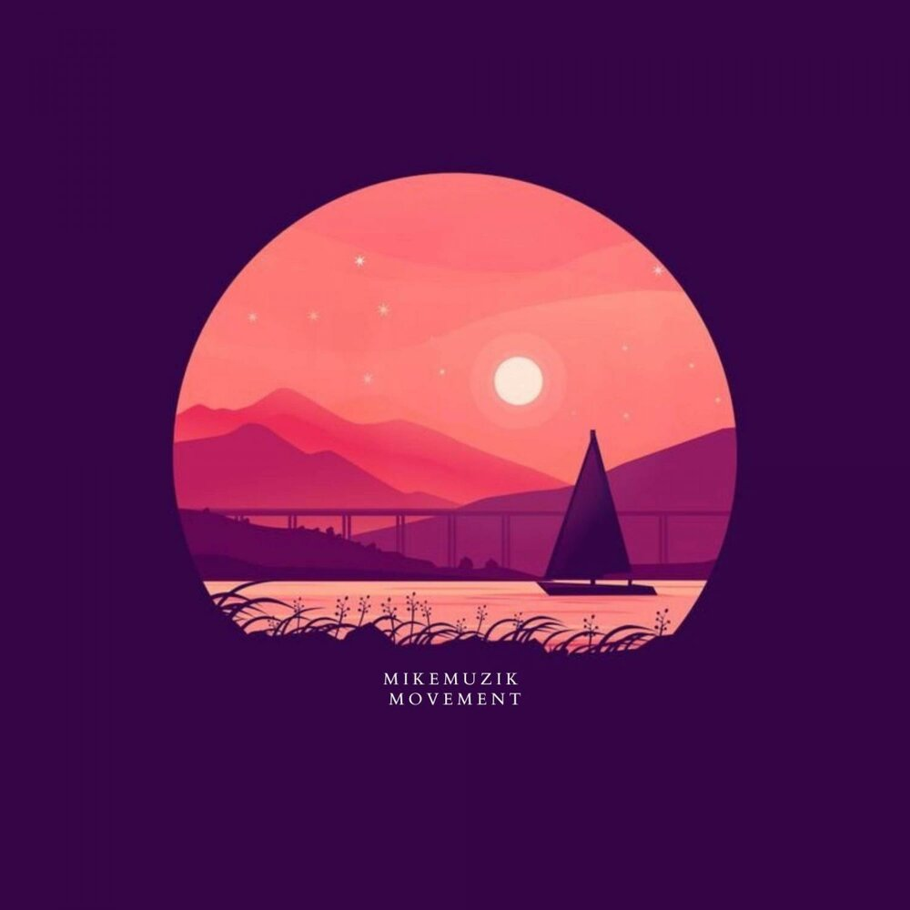
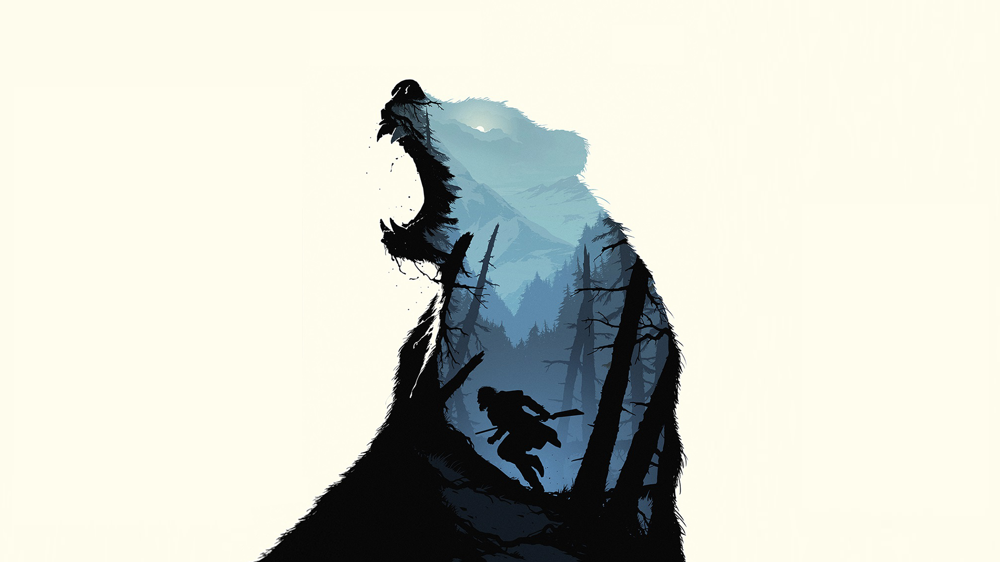
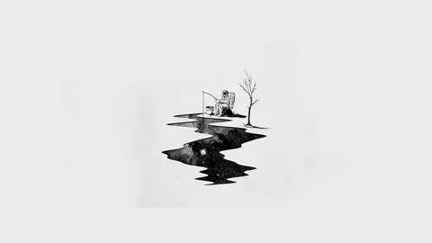

Минимализм
Что такое Минимализм?
Минимализм — это стиль, который стремится к простоте и лаконичности, избегая излишеств и лишних деталей. В искусстве минимализм выражается через чистые формы, ограниченную палитру и акцент на пространстве.
Примеры работ


